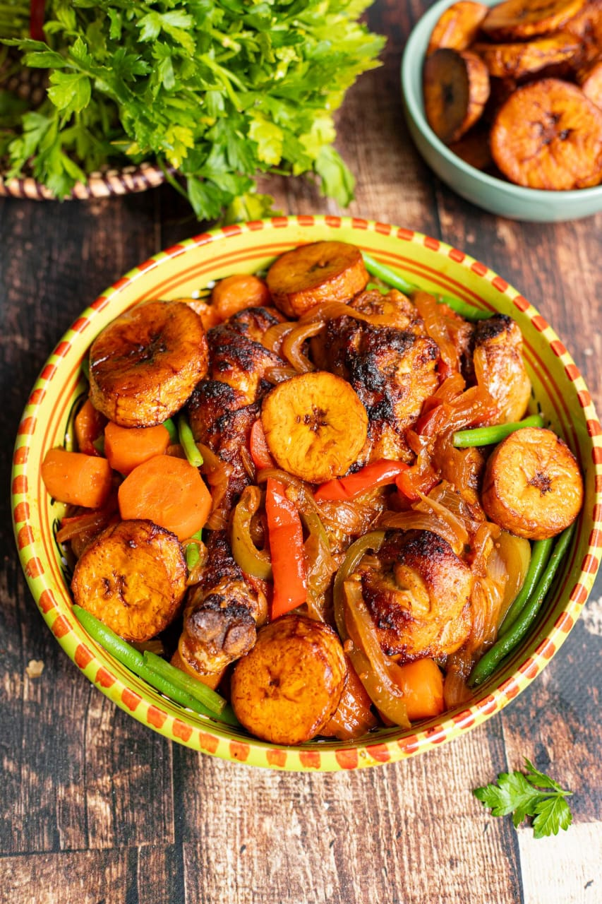
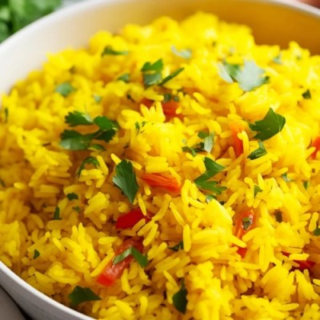
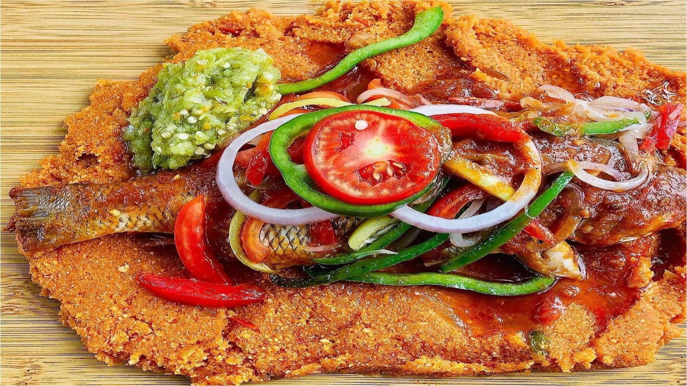

Recettes simples et gourmandes
|
 source |
DescriptionLe poulet DG est un plat très populaire en Afrique centrale. Il est préparé avec du poulet frit, des bananes plantain mûres et des légumes. C'est un plat savoureux souvent servi lors des grandes occasions. Ingrédients
PréparationLe Poulet DG est un plat préparé avec du poulet frit, des bananes plantain mûres et des légumes. Pour le préparer, on commence par assaisonner et cuire le poulet, puis on le fait frire pour qu’il soit bien doré. Ensuite, on épluche et frit les bananes plantain. Après cela, on fait revenir les légumes comme l’oignon, les carottes, le poivron et la tomate dans une poêle pour préparer la sauce. Enfin, on ajoute le poulet frit et les plantains dans la sauce et on laisse cuire quelques minutes pour bien mélanger les saveurs. Le Poulet DG se sert bien chaud et constitue un plat riche et très apprécié lors des repas spéciaux. |
|
 src |
DescriptionLe Riz Coco est un plat africain crémeux et savoureux, préparé avec du riz et du lait de coco. Il est souvent accompagné de poulet, poisson ou légumes et se déguste lors des repas en famille ou pour des occasions spéciales. Ingrédients
Préparation
|
|
 src |
DescriptionLe Sifio est un plat traditionnel togolais préparé avec du poisson accompagné de pinon (gari). Il est servi avec une sauce aux légumes savoureuse et légèrement épicée. Ce plat est très apprécié pour son goût et sa simplicité. Ingrédients
Préparation
|